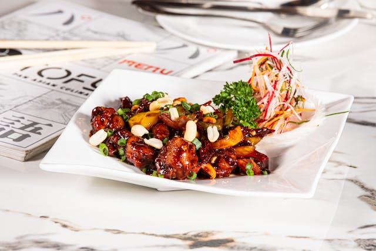

Home
Kung Pao Chicken

Description
This tasty Kung Pao Chicken is similar to what is served in Chinese restaurants.
It's easy to make, and you can be as creative with the measurements as you want.
You can't go wrong! The sauce reduces until nice and thick.
Ingredients
- 2 tablespoons cornstarch, dissolved in 2 tablespoons water
- 2 tablespoons white wine, divided
- 2 tablespoons soy sauce, divided
- 2 tablespoons sesame oil, divided
- 1 pound skinless, boneless chicken breast halves - cut into chunks
- 1 ounce hot chilli paste
- 2 teaspoons brown sugar
- 1 teaspoon distilled white vinegar
- 1 (8 ounce) can water chestnuts
- 4 ounces chopped peanuts
- 4 green onions, chopped
- 1 tablespoon chopped garlic
Steps
- Make the marinade, then marinate chicken in the fridge.
- Make the chili paste-brown sugar sauce. Add the remaining ingredients and cook.
- Cook the marinated chicken in a skillet until it's cooked through.
- Add the chicken to the chili paste-brown sugar sauce.
- Continue cooking until the sauce thickens.